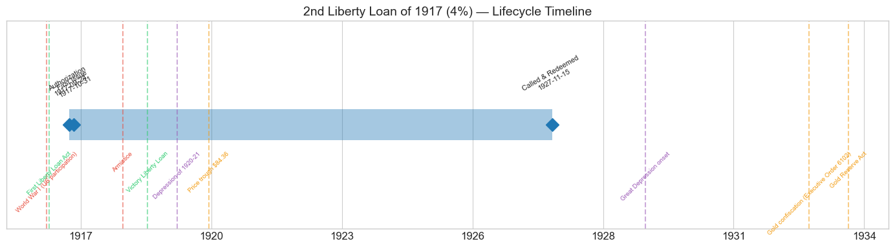
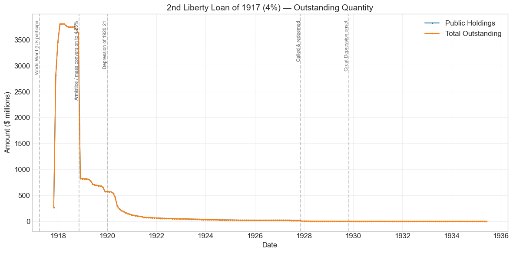
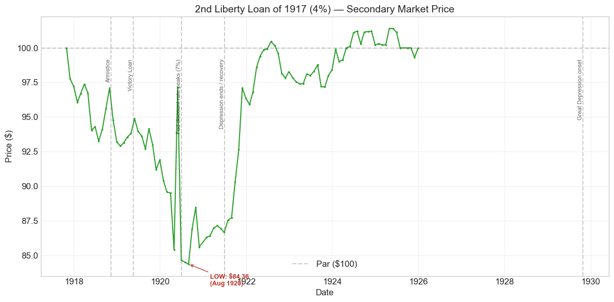
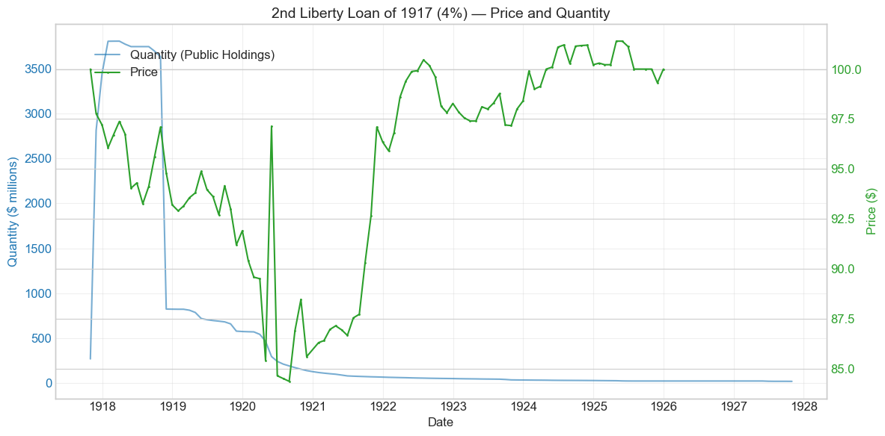
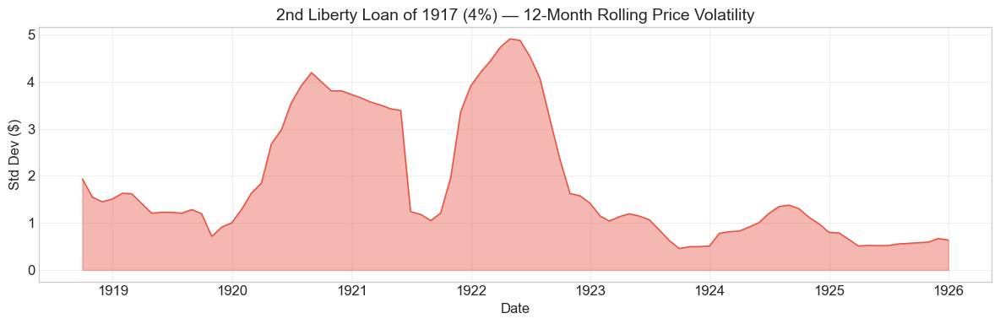

Bond Biography: 2nd Liberty Loan of 1917 (4%)#
An Enhanced Chapter from the Hall-Payne-Sargent US Federal Bond Database (2,857 issues, 1776–1960)
Bond ID (L1): 20166 Category: Interest Bearing > Marketable > Liberty Loan Coupon Rate: 4.0% First Issue Date: October 31, 1917 Term: 25 years (callable from 1927; bonds of 1927–42) Sold at Par: $100
“We went direct to the people: and that means to everybody – to business men, workmen, farmers, bankers, millionaires, school-teachers, laborers. We capitalized the profound impulse called patriotism.” – William Gibbs McAdoo, Secretary of the Treasury, on the Liberty Loan campaigns (Crowded Years, 1931)
import pandas as pd
import numpy as np
import matplotlib.pyplot as plt
import matplotlib.patches as mpatches
import datetime
import warnings
warnings.filterwarnings('ignore')
plt.style.use('seaborn-v0_8-whitegrid')
plt.rcParams.update({'figure.figsize': (12, 6), 'font.size': 12,
'axes.titlesize': 14, 'axes.labelsize': 12})
# Load the bond database
store = pd.HDFStore('../data/BondDF.h5', mode='r')
BondList = store['BondList']
BondQuant = store['BondQuant']
BondPrice = store['BondPrice']
store.close()
BondQuant_T = BondQuant.transpose()
BondPrice_T = BondPrice.transpose()
bond_id = 20166
print(f'Loaded data for: 2nd Liberty Loan of 1917 (4%) (ID: 20166)')
/Users/thomassargent/anaconda3/lib/python3.9/site-packages/pandas/core/arrays/masked.py:60: UserWarning: Pandas requires version '1.3.6' or newer of 'bottleneck' (version '1.3.5' currently installed).
from pandas.core import (
Loaded data for: 2nd Liberty Loan of 1917 (4%) (ID: 20166)
Overview#
The 2nd Liberty Loan of 1917 (4%) was authorized by the Second Liberty Bond Act of September 24, 1917 and first issued on October 31, 1917, with a coupon rate of 4.0%. The bond was active during World War I (US participation), the Depression of 1920–21, and the onset of the Great Depression. During its lifetime on the secondary market, the bond’s average price was \(95.5, ranging from \)84.36 to \(101.4 (based on 97 monthly observations from 1917-10-31 to 1925-12-31). Peak outstanding reached **\)3.81 billion** on 1918-03-31.
The Second Liberty Loan was the sequel to the First – and in almost every dimension it was bigger. The reader who has followed the 1st Liberty Loan chapter already knows the machinery: Secretary of the Treasury William Gibbs McAdoo, Wilson’s son-in-law and the architect of American war finance, had built a national apparatus of Liberty Loan committees, volunteer canvassers, celebrity rallies, and Federal Reserve distribution channels to sell government debt directly to ordinary citizens. The Second Loan, offered to the public from October 1 to October 27, 1917, was the first full test of that apparatus at scale. Roughly 9.4 million subscribers – more than double the First Loan’s 4 million – pledged approximately **\(4.6 billion** against a \)3 billion offering. The Treasury exercised its option to accept half the oversubscription, taking **\(3.81 billion**, a figure the database confirms almost exactly: peak outstanding of \)3.81 billion in March 1918. It was, at the time, the largest single security issue in American history.
Two things make this bond’s story distinctive in the broader arc of U.S. fiscal history. First, its authorizing statute. The Second Liberty Bond Act did far more than authorize one loan: it became the permanent legal chassis of federal borrowing. Every subsequent war loan was issued as an amendment to this act, and its successive amendments evolved into the modern statutory debt limit – the aggregate ceiling on federal debt that Congress still fights over more than a century later. Second, its price history. Sold at par to millions of patriotic small savers, the 4% Seconds spent nearly the whole period from late 1917 to 1923 below par, bottoming at $84.36 in August 1920. The gap between the patriotic price and the market price – what contemporaries bitterly debated as the small bondholder’s loss – taught the Treasury durable lessons about the limits of pricing debt on sentiment rather than yield.
Historical Context#
The following major events occurred during this bond’s lifetime:
Date |
Event |
Category |
|---|---|---|
1917-04-06 to 1918-11-11 |
World War I (US participation) |
War |
1917-09-24 |
Second Liberty Bond Act |
Legislation |
1918-04 to 1918-05 |
Third Liberty Loan (4.25%) opens conversion era |
Legislation |
1918-11-11 |
Armistice |
War |
1919-04/05 |
Victory Liberty Loan |
Legislation |
1920-01-01 to 1921-07-01 |
Depression of 1920–21 |
Crisis |
1927-11 |
Call and redemption of the Second Liberty Loan |
Fiscal |
1929-10-29 to 1933-03-01 |
Great Depression onset |
Crisis |
1933-04-05 |
Gold confiscation (Executive Order 6102) |
Monetary |
1934-01-30 |
Gold Reserve Act |
Monetary |
The Second Liberty Bond Act and the Birth of the Debt Limit#
By September 1917 it was obvious that the First Liberty Loan Act’s authorization would not carry the war effort through the winter. War costs were running far ahead of the spring estimates, and enormous credits were being advanced to the Allies. Congress responded on September 24, 1917 with the Second Liberty Bond Act (40 Stat. 288), which authorized roughly $7.5 billion of new bonds – a sum nearly seven times total federal revenue of the prior fiscal year – and, crucially, did so as a standing authorization rather than a one-loan measure.
The act’s structure proved to be its most enduring legacy. Instead of authorizing each loan by separate statute, Congress gave the Treasury a ceiling within which it could choose amounts, maturities, and terms. The Third and Fourth Liberty Loans and the Victory Loan were all issued under amendments to this same act, as were Treasury certificates, notes, and (later) savings bonds. Through successive amendments – most importantly the consolidation of separate ceilings into a single aggregate limit on total federal debt in 1939 – the Second Liberty Bond Act evolved into the modern statutory debt limit. When Americans today read headlines about “raising the debt ceiling,” they are reading about amendments to the legal framework created to sell this bond.
The War#
Unlike the First Loan, floated in the hopeful spring of 1917, the Second was sold as American troops were arriving in France and casualty lists were becoming real. Wartime demand – patriotic purchasing, installment plans, and a Federal Reserve policy of keeping money rates deliberately low – held the price in the mid-90s through the Armistice of November 11, 1918. But the bond slipped below par almost immediately after issue and never regained it during the war: at 4%, the coupon was closer to market reality than the First Loan’s 3.5%, but still below it.
The Depression of 1920–21#
The postwar years were brutal for Liberty Bond holders. Inflation ran near 15% in 1919; the Federal Reserve, freed from its wartime obligation to support the Treasury’s market, raised the New York discount rate from 4.75% in late 1919 to 7% by June 1920. Long-term rates followed, and the unconverted 4% Seconds sank to their lifetime low of $84.36 in August 1920 – a loss of nearly 16 cents on the dollar for the subscriber of October 1917. The deflationary collapse of 1920–21 then reversed the process: as prices and interest rates fell, the bond recovered sharply through late 1921 and traded back around par by 1922.
The Great Depression and After#
By the time of the 1929 crash, the Second Liberty Loan had essentially ceased to exist as a market instrument: the bonds had been called and redeemed in November 1927 under Secretary Andrew Mellon’s refunding program. The small residual amounts that appear in the database through 1935 represent called bonds never presented for redemption – stray certificates in safe-deposit boxes – not a living market. The Great Depression, gold confiscation, and the Gold Reserve Act thus fall within the bond’s statistical lifetime but after its economic death.
# Bond Lifecycle Timeline
fig, ax = plt.subplots(figsize=(14, 4))
# Key dates
dates = [('Authorization', '1917-09-24'), ('First Issue', '1917-10-31'), ('Called & Redeemed', '1927-11-15')]
events = [('World War I (US participation)', '1917-04-06', 'war'), ('First Liberty Loan Act', '1917-04-24', 'legislation'), ('Armistice', '1918-11-11', 'war'), ('Victory Liberty Loan', '1919-05-20', 'legislation'), ('Depression of 1920-21', '1920-01-01', 'crisis'), ('Price trough $84.36', '1920-08-31', 'monetary'), ('Great Depression onset', '1929-10-29', 'crisis'), ('Gold confiscation (Executive Order 6102)', '1933-04-05', 'monetary'), ('Gold Reserve Act', '1934-01-30', 'monetary')]
import matplotlib.dates as mdates
from datetime import datetime
# Plot bond lifetime bar
d0 = datetime.strptime(dates[0][1], '%Y-%m-%d')
d1 = datetime.strptime(dates[-1][1], '%Y-%m-%d')
ax.barh(0, (d1 - d0).days, left=mdates.date2num(d0), height=0.3,
color='#1f77b4', alpha=0.4, label='Bond Lifetime')
# Mark key dates
for label, date_str in dates:
d = datetime.strptime(date_str, '%Y-%m-%d')
ax.plot(mdates.date2num(d), 0, 'D', color='#1f77b4', markersize=10)
ax.annotate(f'{label}\n{date_str}', (mdates.date2num(d), 0.25),
ha='center', va='bottom', fontsize=8, rotation=30)
# Mark historical events
colors = {'war': '#e74c3c', 'crisis': '#9b59b6', 'legislation': '#2ecc71', 'other': '#95a5a6', 'monetary': '#f39c12'}
for name, date_str, cat in events:
d = datetime.strptime(date_str, '%Y-%m-%d')
ax.axvline(mdates.date2num(d), color=colors.get(cat, 'gray'), alpha=0.5, linestyle='--')
ax.annotate(name, (mdates.date2num(d), -0.25), ha='center', va='top',
fontsize=7, rotation=45, color=colors.get(cat, 'gray'))
ax.set_yticks([])
ax.xaxis.set_major_formatter(mdates.DateFormatter('%Y'))
ax.set_title('2nd Liberty Loan of 1917 (4%) — Lifecycle Timeline')
ax.set_ylim(-1, 1)
plt.tight_layout()
plt.show()

Bond Features#
Feature |
Detail |
|---|---|
Name |
2nd Liberty Loan of 1917 (4%) |
Authorizing Act |
Second Liberty Bond Act, September 24, 1917 (40 Stat. 288) |
Authorization Date |
September 24, 1917 |
First Issue Date |
October 31, 1917 |
Term |
25 years — “bonds of 1927–42” (callable beginning November 1927, maturing 1942) |
Coupon Rate |
4.0% |
Payment Frequency |
Semi-annual |
Callable |
Yes |
Payable in Coin |
Yes (gold) |
Price Sold |
Par (100) |
Offered |
$3.0 billion (with right to accept half the oversubscription) |
Subscribed |
~$4.6 billion |
Accepted |
~$3.81 billion (confirmed by peak outstanding in the database) |
Subscribers |
~9.4 million |
Conversion Privilege |
Yes — convertible into subsequent higher-coupon issue (exercised into the 4.25% Seconds) |
Tax Status |
Exempt from state and local taxes and from the normal federal income tax; subject to federal surtaxes and excess-profits taxes (a narrower exemption than the First Loan’s) |
The tax provision deserves emphasis. The First Liberty Loan’s bonds were exempt from essentially all federal taxation except estate and inheritance taxes – an exemption so generous to wealthy holders that Congress reconsidered. The Second Liberty Bond Act narrowed the shield: the new 4% bonds remained free of the normal income tax but were exposed to the steep wartime surtaxes on large incomes. The higher 4% coupon was, in part, compensation for the weaker tax exemption – an early lesson in how tax privileges and coupon rates trade off against each other in pricing government debt.
# Display full bond features from database
row = BondList.loc[20166]
display_cols = [
"Treasury's Name Of Issue", 'Authorizing Act', 'Term Of Loan',
'First Issue Date', 'First Redemption Date', 'Final Redemption Date',
'Coupon Rate', 'Coupons Per Year', 'Callable', 'Coin',
'Authorized Amount', 'Price Sold'
]
print('Bond Features from Database:')
print('=' * 55)
for col in display_cols:
if col in row.index:
print(f' {col:<30} {row[col]}')
Bond Features from Database:
=======================================================
Treasury's Name Of Issue 2nd Liberty Loan of 1917 (4%)
Authorizing Act September 24, 1917
Term Of Loan 25 years
First Issue Date 1917-10-31 00:00:00
First Redemption Date NaT
Final Redemption Date NaT
Coupon Rate 4.0
Coupons Per Year 2.0
Callable 1.0
Coin 1.0
Authorized Amount nan
Price Sold 1.0
Bond Quantity Over Time#
The bond’s outstanding quantity peaked at $3.81 billion on 1918-03-31. Data spans from 1917-10-31 to 1927-10-31 for public holdings (121 monthly observations), with a residual “Total Outstanding” series of uncollected called bonds extending to 1935.
The quantity path tells the bond’s structural story at a glance: a nearly vertical ascent as subscription installments were paid in over the winter of 1917–18, a plateau at \(3.8 billion through most of 1918, then a cliff in **November 1918** as roughly **\)2.8 billion** of 4% bonds were exchanged for the new 4.25% converted Seconds (Bond ID 20167). What remains after that cliff – about \(820 million -- bled steadily away through 1919--1921 as stragglers converted, until barely \)64 million of unconverted 4s remained by the end of 1921 and only about $17 million by October 1927, when the whole issue was called.
# Bond quantity over time
fig, ax = plt.subplots(figsize=(12, 6))
for stype in ['Public Holdings', 'Total Outstanding']:
try:
s = BondQuant_T.loc[(20166, stype)]
s = s[s.notna()]
if len(s) > 0:
ax.plot(s.index, s.values / 1e6, marker='.', markersize=3, linewidth=1.5, label=stype)
except KeyError:
pass
ax.set_title('2nd Liberty Loan of 1917 (4%) — Outstanding Quantity')
ax.set_xlabel('Date')
ax.set_ylabel('Amount ($ millions)')
ax.legend()
ax.grid(True, alpha=0.3)
events = {'1917-04-06': 'World War I (US participa', '1918-11-11': 'Armistice / mass conversion to 4.25%', '1920-01-01': 'Depression of 1920-21', '1927-11-15': 'Called & redeemed', '1929-10-29': 'Great Depression onset'}
for date_str, label in events.items():
d = pd.Timestamp(date_str)
ax.axvline(d, color='gray', alpha=0.4, linestyle='--')
ax.text(d, ax.get_ylim()[1]*0.97, label, rotation=90, va='top', ha='right', fontsize=8, alpha=0.7)
plt.tight_layout()
plt.show()

Quantity Analysis#
Three forces drove the quantity pattern:
1. Installment-driven issuance (October 1917 – March 1918). Liberty Loan subscribers did not pay all at once; the standard schedule spread payment over several months. The database records \(267 million outstanding at the end of October 1917, \)2.8 billion by November, \(3.45 billion by December, and the full **\)3.81 billion** by early 1918. The huge auto-detected “quantity increase” of November 1917 (+952.7%) is simply this installment schedule at work, not a new borrowing decision.
2. Conversion into the 4.25% Seconds (1918–1921). The Second Liberty Loan carried a one-time conversion privilege: if a later loan bore a higher rate, holders could exchange into it. The Third Liberty Loan of April 1918 set that higher rate at 4.25%, triggering the privilege. The exchange shows up in the data as the collapse of public holdings from \(3.64 billion in October 1918 to **\)822 million in November 1918** – a 77% single-month drop – mirrored almost dollar-for-dollar by the appearance of $2.8 billion of “2nd Liberty Loan Converted to 4.25%” (ID 20167) in the same month. Holdings of the unconverted 4s then continued to leak into the 4.25s for years: the 20167 series keeps growing through 1920–21 exactly as the 20166 series shrinks. Note that November 1918 is when the database records the bulk exchange; conversions were executed over the months around it.
3. Call and redemption (1927). Under Andrew Mellon’s refunding program, the Treasury exercised the call option at the first legal opportunity: the Seconds – both the residual 4s and the huge 4.25% converted issue – were called for redemption on November 15, 1927, with holders offered the chance to refund into new lower-coupon Treasury issues. The public-holdings series accordingly ends in October 1927 at about \(17 million. The "Total Outstanding" residual that dwindles from ~\)1.4 million in 1929 to ~$0.6 million in 1935 represents called bonds whose owners never presented them for payment – certificates lost, forgotten, or kept as souvenirs, on which interest had ceased.
The bond was thus refinanced twice over its life: first upward in coupon (into the 4.25s, at the holders’ option, to protect them), then downward (into cheaper Treasury notes, at the government’s option, to save the taxpayer money). The two refinancings bracket the interest-rate cycle of 1917–1927 almost perfectly.
Secondary Market Prices#
Overall Statistics (1917-10-31 to 1925-12-31): Mean \(95.5, Range \)84.36–\(101.4, Std Dev \)4.91, 97 observations.
By Period:
Period |
Mean |
Std |
Min |
Max |
Obs |
|---|---|---|---|---|---|
Issue to End (1917-10 to 1925-12) |
$95.5 |
$4.91 |
$84.36 |
$101.4 |
97 |
The price history divides into three acts:
Wartime, below par (1917–1918). The bond opened at par in October 1917 and slipped almost immediately, trading between \(93 and \)98 through the Armistice. Even a 4% coupon – a half-point above the First Loan’s – was below what an unsentimental market required, and once the initial campaign ended, the “patriotic premium” could not hold the price at 100.
The postwar slide (1919 – August 1920). Inflation, the Victory Loan’s competing 4.75% coupon (May 1919), and above all the Federal Reserve’s sharp tightening – the New York discount rate reached 7% in June 1920 – pushed the price down to its lifetime low of $84.36 in August 1920.
Deflation and recovery (late 1920 – 1925). As the 1920–21 depression broke the inflation and interest rates fell, the bond staged a powerful rally: from the mid-80s in mid-1921 to \(97 by November 1921 and back to par during 1922. It then traded quietly near or slightly above par -- peaking at \)101.4 in April 1925 – until the price series ends in December 1925, with the call of 1927 already visible on the horizon.
# Annotated price chart
fig, ax = plt.subplots(figsize=(12, 6))
s = BondPrice_T.loc[(20166, 'Average')]
s = pd.to_numeric(s, errors='coerce').dropna()
if len(s) > 0:
ax.plot(s.index, s.values, marker='.', markersize=3, linewidth=1.5, color='#2ca02c')
ax.axhline(100, color='black', alpha=0.2, linestyle='--', label='Par ($100)')
ax.set_title('2nd Liberty Loan of 1917 (4%) — Secondary Market Price')
ax.set_xlabel('Date')
ax.set_ylabel('Price ($)')
ax.legend()
ax.grid(True, alpha=0.3)
events = {'1918-11-11': 'Armistice', '1919-05-20': 'Victory Loan', '1920-06-30': 'Fed discount rate peaks (7%)', '1921-07-01': 'Depression ends / recovery', '1929-10-29': 'Great Depression onset'}
for date_str, label in events.items():
d = pd.Timestamp(date_str)
ax.axvline(d, color='gray', alpha=0.4, linestyle='--')
ax.text(d, ax.get_ylim()[1]*0.97, label, rotation=90, va='top', ha='right', fontsize=8, alpha=0.7)
# Mark the lifetime low
low_date, low_val = s.idxmin(), s.min()
ax.annotate(f'LOW: ${low_val:.2f}\n({low_date.strftime("%b %Y")})',
xy=(low_date, low_val), xytext=(30, -30), textcoords='offset points',
fontsize=9, fontweight='bold', color='#c0392b',
arrowprops=dict(arrowstyle='->', color='#c0392b'))
plt.tight_layout()
plt.show()

# Price and Quantity — dual-axis chart
fig, ax1 = plt.subplots(figsize=(12, 6))
# Quantity (left axis)
for stype in ['Public Holdings', 'Total Outstanding']:
try:
q = BondQuant_T.loc[(20166, stype)]
q = q[q.notna()]
if len(q) > 0:
ax1.plot(q.index, q.values / 1e6, color='#1f77b4', alpha=0.6, label=f'Quantity ({stype})')
break
except KeyError:
pass
ax1.set_xlabel('Date')
ax1.set_ylabel('Quantity ($ millions)', color='#1f77b4')
ax1.tick_params(axis='y', labelcolor='#1f77b4')
# Price (right axis)
ax2 = ax1.twinx()
p = BondPrice_T.loc[(20166, 'Average')]
p = pd.to_numeric(p, errors='coerce').dropna()
if len(p) > 0:
ax2.plot(p.index, p.values, color='#2ca02c', marker='.', markersize=2, label='Price')
ax2.set_ylabel('Price ($)', color='#2ca02c')
ax2.tick_params(axis='y', labelcolor='#2ca02c')
ax1.set_title('2nd Liberty Loan of 1917 (4%) — Price and Quantity')
ax1.grid(True, alpha=0.3)
fig.legend(loc='upper left', bbox_to_anchor=(0.1, 0.9))
plt.tight_layout()
plt.show()

Detected Price/Quantity Events#
The following significant movements were auto-detected:
Date |
Type |
Change |
Explanation |
|---|---|---|---|
1917-11 |
Quantity increase |
+952.7% |
Installment payments. Subscribers paid in stages; outstanding jumped from \(267M (Oct) to \)2.81B (Nov) as the second installment came due. Not new borrowing – the subscription books had already closed on October 27. |
1917-12 |
Quantity increase |
+22.6% |
Further installments, carrying the issue to \(3.45B en route to its \)3.81B peak in early 1918. |
1918-11 |
Quantity decrease |
-77.4% |
Mass conversion. Roughly $2.8 billion of 4% Seconds were exchanged for the 4.25% converted Seconds (ID 20167), the privilege having been triggered by the Third Liberty Loan’s 4.25% coupon. The database records the bulk exchange in November 1918, the month of the Armistice. |
1920-05 |
Price spike |
+13.8% |
Almost certainly a data artifact. The May 1920 quote of \(97.14 sits between \)85.40 (April) and $84.64 (June); no plausible event supports a one-month round trip of +14%/-13% at the bottom of a bear market. The observation likely reflects a transcription or source-quotation issue (for example, a quote picked up from a different Liberty issue) rather than a genuine market move. |
1920-05 |
Quantity decrease |
-36.6% |
Continued conversion of residual 4s into the 4.25s: public holdings of this bond fell from \(463M to \)293M while holdings of ID 20167 rose by a comparable amount in the same months. |
1920-06 |
Price drop |
-12.9% |
The mirror image of the May “spike”: the price simply returned to its true trend near \(84--85 as the anomalous May observation dropped out. The genuine economic story is the grinding decline to the August 1920 low of \)84.36 under 7% discount rates. |
The honest reading of 1920 is therefore one of level, not of spikes: the bond spent April–November 1920 pinned in the mid-80s, the deepest discount of its life, while the Federal Reserve broke the postwar inflation.
Price Volatility#
Maximum drawdown: -15.6% (from peak on 1917-10-31 to trough on 1920-08-31)
Average monthly return: 0.027%
The chart below shows the 12-month rolling standard deviation of prices, indicating periods of high and low price stability. Volatility peaks around 1920–21 – partly reflecting the genuine violence of the rate cycle, and partly inflated by the anomalous May 1920 observation discussed above. The placid readings of 1923–25 show a bond that had become, once again, a boring near-par government security awaiting its call.
# Rolling volatility (12-month window)
p = BondPrice_T.loc[(20166, 'Average')]
p = pd.to_numeric(p, errors='coerce').dropna()
if len(p) >= 12:
rolling_std = p.rolling(window=12).std().dropna()
fig, ax = plt.subplots(figsize=(12, 4))
ax.fill_between(rolling_std.index, rolling_std.values, alpha=0.4, color='#e74c3c')
ax.plot(rolling_std.index, rolling_std.values, color='#e74c3c', linewidth=1)
ax.set_title('2nd Liberty Loan of 1917 (4%) — 12-Month Rolling Price Volatility')
ax.set_xlabel('Date')
ax.set_ylabel('Std Dev ($)')
ax.grid(True, alpha=0.3)
plt.tight_layout()
plt.show()
else:
print('Insufficient data for rolling volatility (need >= 12 observations)')

Issuance, Distribution, and Redemption#
The bond was sold at par (\(100 per \)100 of face value).
The October 1917 Campaign#
The Second Liberty Loan drive ran from October 1 to October 27, 1917, and it mobilized the machinery described at length in the First Liberty Loan chapter, now running at full throttle: the twelve Federal Reserve Banks as distribution hubs, Liberty Loan committees in every city and county, four-minute speeches in movie theaters, posters, parades, and celebrity appearances. What was new in October 1917 was the scale and the pitch. The First Loan had been sold in a war that was still abstract; the Second was sold while the first American divisions were in France. The Treasury’s poster art turned darker and more urgent, and the campaign deliberately reached down the income distribution: bonds were available in denominations as small as \(50**, purchasable on installment plans through banks and employers. The results showed it -- subscriptions came from roughly 9.4 million people, and the average subscription fell to about **\)491 from the First Loan’s $759, a sign that the marginal buyer was a smaller saver.
Who Bought#
Individual citizens were the campaign’s heart and its political point: McAdoo wanted the war financed by genuine saving, not bank credit, to restrain inflation. In practice, many small buyers borrowed from their banks to pay for bonds (“borrow and buy”), blunting that intention.
Banks subscribed on their own account, lent against Liberty Bonds at preferential rates (supported by the Federal Reserve’s discount policy), and served, unpaid, as the distribution network.
Corporations and employers subscribed and ran payroll-deduction plans for workers.
Redemption: Mellon’s Refunding and the 1927 Call#
The Seconds were “bonds of 1927–42”: callable at par from November 1927, due in 1942. Throughout the 1920s, Secretary Andrew Mellon ran budget surpluses and systematically refinanced the wartime debt at the decade’s lower interest rates. When the call window opened, the Treasury took it: the Second Liberty Loan – the residual 4s together with the large 4.25% converted issue – was called for redemption on November 15, 1927. Holders could take cash or exchange into new, lower-yielding Treasury securities offered in the 1927 refundings. The database’s public-holdings series for this bond accordingly terminates in October 1927, with about $17 million still in public hands on the eve of redemption.
A decade to the month after 9.4 million Americans oversubscribed a 4% war loan, the government retired it early because 4% had become too expensive a rate to pay. Few single facts summarize the interest-rate history of 1917–1927 more neatly.
Implications and Legacy#
The Statute That Outlived the Bond#
The Second Liberty Loan’s deepest legacy is legal, not financial. The Second Liberty Bond Act of 1917 became the permanent framework for federal borrowing: rather than authorizing loans one statute at a time, Congress set ceilings and delegated the details to the Treasury. Amended again and again – for the later Liberty Loans, for the securities of the 1920s and 1930s, and decisively in 1939, when the separate ceilings were merged into a single aggregate limit on total federal debt – the act is the direct ancestor of today’s debt ceiling. Every modern debt-limit standoff is, technically, a fight over an amendment to the law that created this bond. The delegation itself was equally consequential: it marks the beginning of modern federal debt management, in which the Treasury, not Congress, chooses instruments, maturities, and timing.
Financing the War#
At roughly $3.8 billion accepted, the Second Liberty Loan was the largest security issue in American history to that date, and with its sibling loans it carried the bulk of a war effort that taxes covered only partially. Its 9.4 million subscribers more than doubled the First Loan’s count and marked the moment mass war finance became genuinely mass – a progression that would peak at nearly 23 million subscribers for the Fourth Loan a year later.
The Below-Par Lesson#
The Second Loan’s price history crystallized the central dilemma of “patriotic pricing.” The Treasury sold bonds at par with below-market coupons because high rates would have raised the cost of the war and looked like profiteering from patriotism. The market then did what markets do: the bonds sank below par, and millions of first-time investors – people who had been told that buying bonds was a duty – watched their \(100 certificates quote at \)85. The resentment was real and politically potent, and the episode figured in postwar debates about the Treasury’s and the Federal Reserve’s obligations to bond buyers. The policy responses shaped a generation of practice: the conversion privilege (protecting holders when rates rose), the Victory Loan’s higher coupon, the Treasury’s 1920s support of orderly refundings, and ultimately the World War II design of the non-marketable savings bond, whose redemption value could never fall below cost – a direct answer to the sight of Liberty Bonds at 85.
Creditworthiness and the Rate Cycle#
Nothing in this bond’s history reflects doubt about the government’s willingness or ability to pay; every coupon was paid in gold and the principal was redeemed early, at par. Its 16-point round trip below par and back was purely an interest-rate story – inflation and 7% discount rates on the way down, deflation and Mellon-era surpluses on the way back. In that sense the Second Liberty Loan is a clean natural experiment, preserved in the database, of how even riskless nominal debt punishes its holders when the price level and policy rates move against them.
An Anecdote in the Data#
The database’s residual “Total Outstanding” series – still showing some $600,000 of Second 4s in 1935, eight years after the call, earning nothing – is a quiet census of forgetfulness: bonds in attic trunks, safe-deposit boxes of the deceased, and frames on parlor walls. For many families a Liberty Bond had never really been a financial asset at all; it was a certificate of participation in the war. Some, evidently, never cashed it.
References#
Primary Database#
Payne, J., Szoke, A., Hall, G. & Sargent, T. (2025). Quarterly Journal of Economics.
Primary Sources#
Second Liberty Bond Act, Act of September 24, 1917, ch. 56, 40 Stat. 288 (and subsequent amendments).
Annual Report of the Secretary of the Treasury on the State of the Finances, 1917, 1918, and 1927. Washington: Government Printing Office.
Scholarly Works#
Garbade, K. D. (2012). Birth of a Market: The U.S. Treasury Securities Market from the Great War to the Great Depression. MIT Press.
Kang, S. W. & Rockoff, H. (2015). “Capitalizing Patriotism: The Liberty Loans of World War I.” Financial History Review, 22(1): 45–78.
Rockoff, H. (2012). America’s Economic Way of War: War and the US Economy from the Spanish-American War to the First Gulf War. Cambridge University Press.
Friedman, M. & Schwartz, A. J. (1963). A Monetary History of the United States, 1867–1960. Princeton University Press.
Studenski, P. & Krooss, H. E. (1952). Financial History of the United States. McGraw-Hill.
Historical Sources#
Federal Reserve History. “Liberty Bonds.” Link
Silber, W. L. (2007). When Washington Shut Down Wall Street: The Great Financial Crisis of 1914 and the Origins of America’s Monetary Supremacy. Princeton University Press.
Tooze, A. (2014). The Deluge: The Great War, America and the Remaking of the Global Order, 1916–1931. Penguin Books.
Enhanced Bond Biography generated from the Hall-Payne-Sargent Bond Database. Original auto-generated chapter enriched with historical narrative, comparative analysis, and contextual annotations. Companion chapter to the 1st Liberty Loan of 1917 (3.5%).